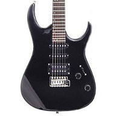

Soy Andres Ospina :)
Perfil Personal
Soy colombiano de nacimiento, pero me gustaria vivir en cada ciudad/puebo del mundo! Siempre me ha gustado la musica, especialmente el rock por esa razon decidi estudiar guitarra y desde mis 14 me gusta aprender canciones de mis artistas favoritos.
Perfil Profesional
Me decidi por el mundo de la Ingenieria en Sistemas porque siempre me gustaron los computadores. Cuando inicie en programacion con Java, empece a entender la complejidad del asunto y vi que habia mucho potencial en el area de desarrollo de software. Por eso, de todas las ramas que tiene el software, me decidi por la programacion, porque me gusta resolver problemas de la vida real y plasmarlos en codigo para ver el producto final vivo en produccion! Si quieres ver mas de mi experiencia ingresa aqui en mi perfil LinkedIn :D
Perfil Academico
Universidad Santiago de Cali
- 2009 - 2011 Tecnologo en Sistemas
- 2012 - 2015 Ingeniero de Sistemas
Three Points - UPC
Actualmente curso el Master en Full Stack Web Development en Three Points School.
Perfil Social
Me gusta mucho compartir mis con amigos, especialmente cuando tocamos covers de otras bandas. Tambien me gusta ayudar a otras personas haciendo donaciones a la iglesia o a cualquier fundacion, no solo para ayudar seres humanos sino tambien animales en situaciones de maltrato, abandono y discapacidad.
Perfil Familiar
Soy una persona de ambito familiar principalmente. Me gusta mucho compartir con mi hijo y mi esposa, salimos a comer a restaurantes que no conozcamos o que nos hayan recomendado asi como tambien probar una buena hamburguesa o una buena salchipapa con buena salsa
Hobbies
Tratare de mencionarlos segun su categoria:
| Deportes | Arte | Videojuegos |
|---|---|---|
| Creci jugando futbol o soccer (para evitar confusiones). Lo practique algunos años cuando era niño. Despues se volvio menos frecuente en mi vida porque decidi probar con el Skateboarding, el cual practico actualmente como novato. | Me gusta mucho la musica, especialmente el rock. Tengo una banda de rock con mis amigos y soy uno de los guitarristas. Me gusta mucho el rock clasico tipo Led Zeppelin, Deep Purple y Black Sabbath. El metal tambien es de mis gustos, lo escucho A DIARIO. | Siempre disfrute juegos como Call of Duty o Mario Kart, por eso tenemos en casa un PlayStation 4 y un Nintendo Switch. Juego Fornite casi a diario! |
|  |  |